Marcus Moreno
Archive
Archive
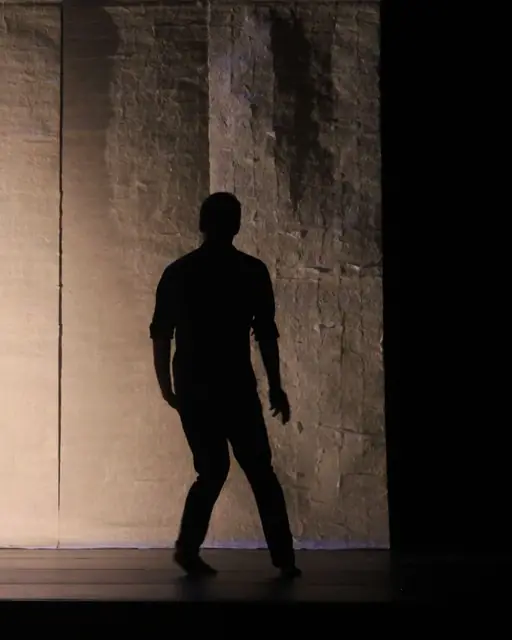
2013 A Imagem como Ausência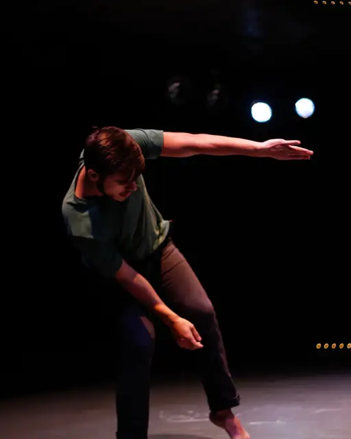
2016 A Flor da Lua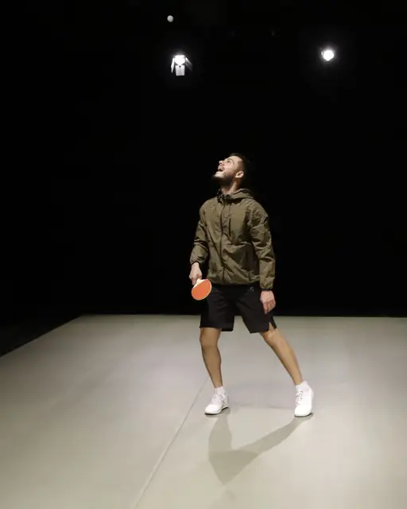
2019 Instante-já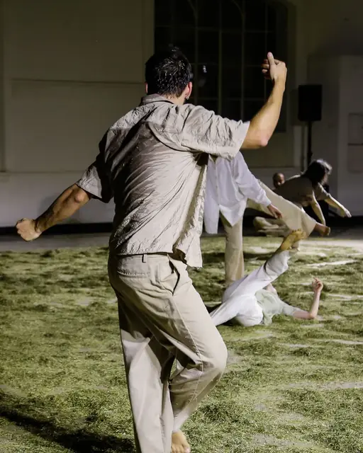
2024 Onde Houver Céu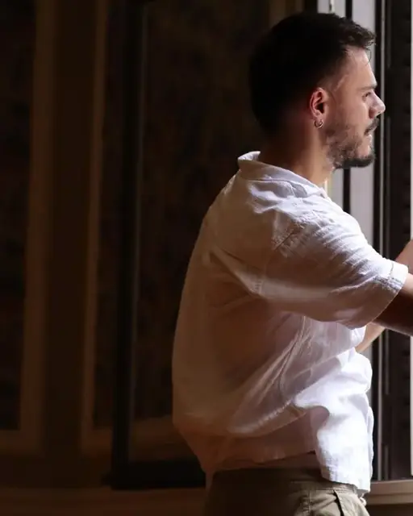
Portrait · 2025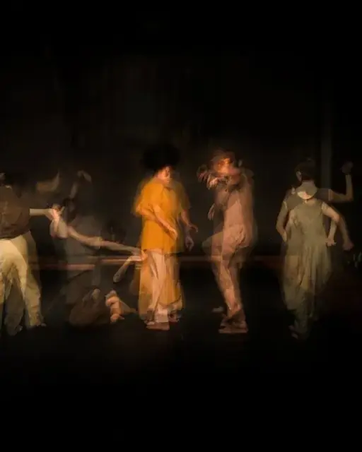
2023 Sempre mais que um 2013 A Imagem como Ausência 2016 A Flor da Lua 2019 Instante-já 2024 Onde Houver Céu Portrait · 2025 2023 Sempre mais que um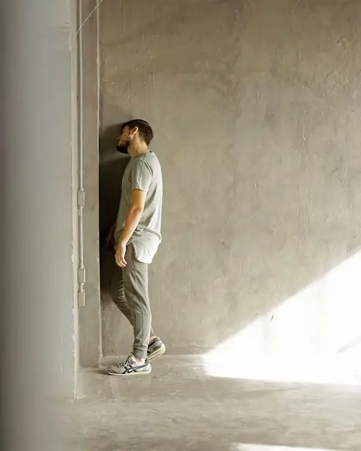
2017 Estudo para o Encontro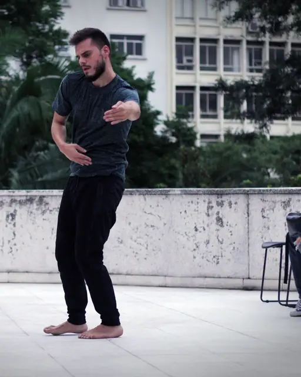
2016 A Flor da Lua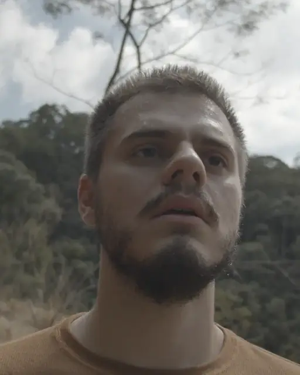
2021 Entre-espaço onde tudo existe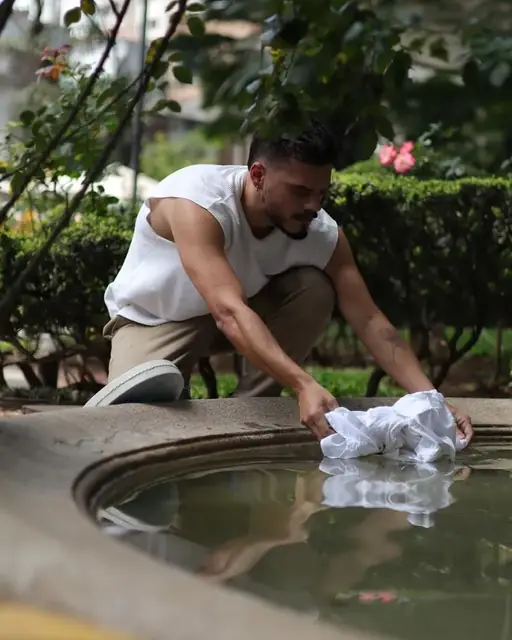
Portrait · 2025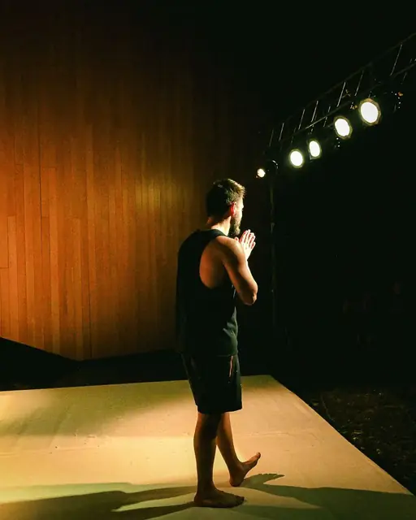
Stage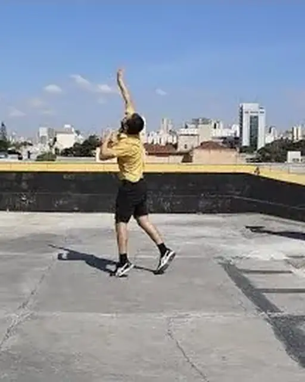
2021 Para insistir em brotar 2017 Estudo para o Encontro 2016 A Flor da Lua 2021 Entre-espaço onde tudo existe Portrait · 2025 Stage 2021 Para insistir em brotar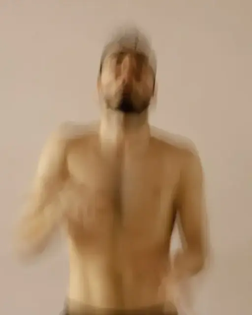
2019 Instante-já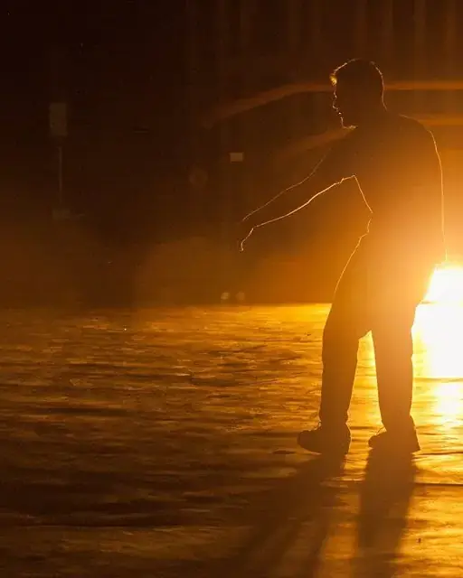
2016 A Flor da Lua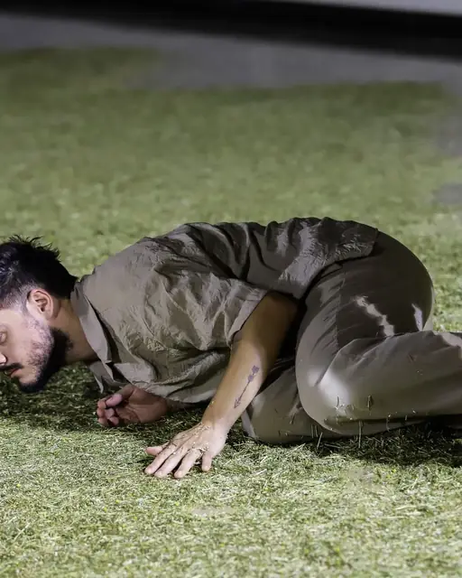
2024 Onde Houver Céu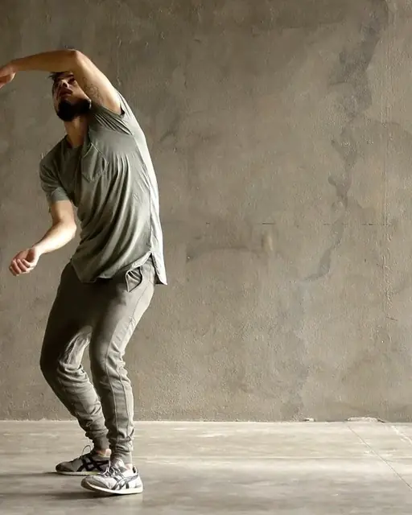
2017 Estudo para o Encontro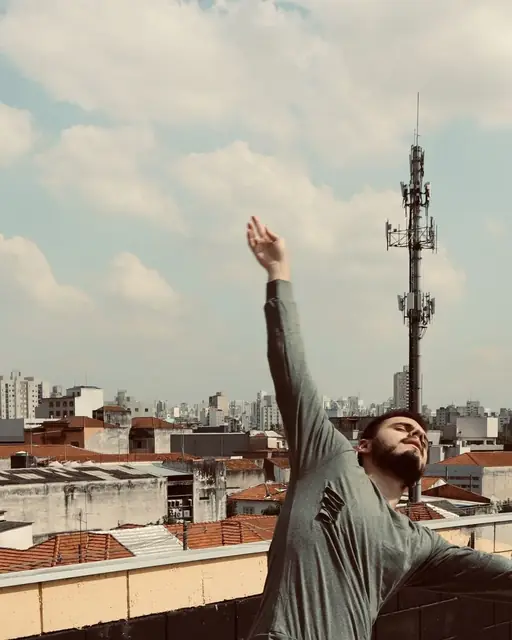
Marcus Moreno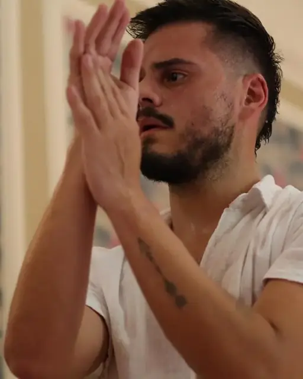
Present Dances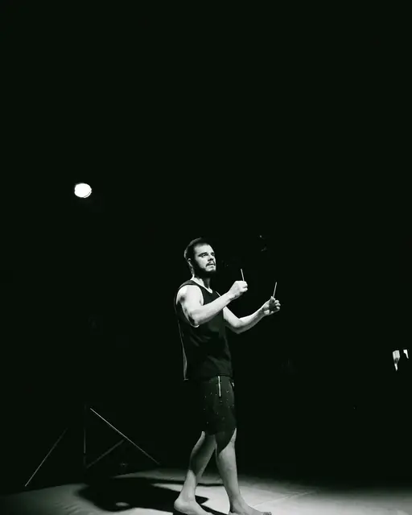
Stage 2019 Instante-já 2016 A Flor da Lua 2024 Onde Houver Céu 2017 Estudo para o Encontro Marcus Moreno Present Dances Stage